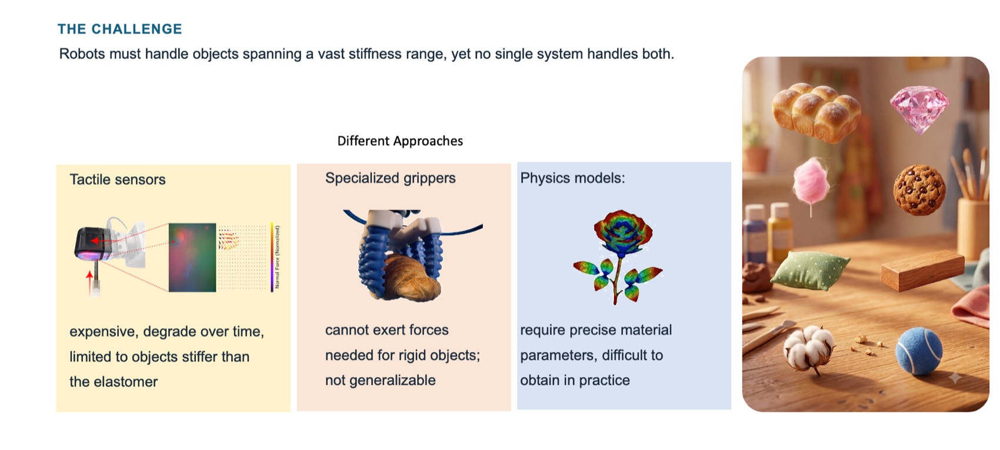
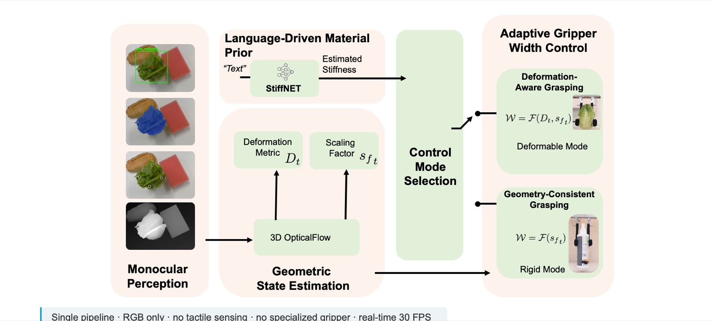
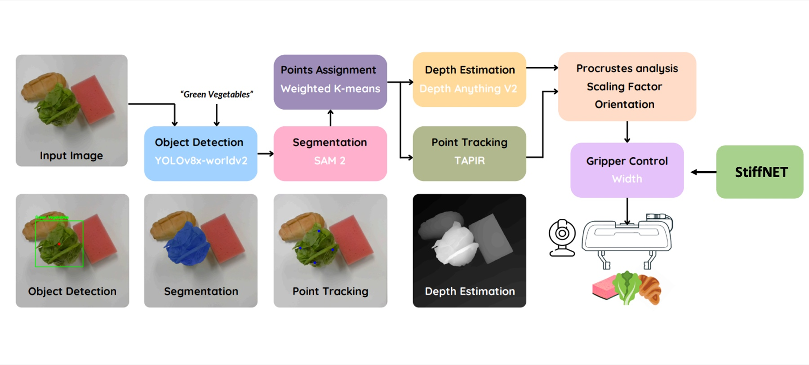
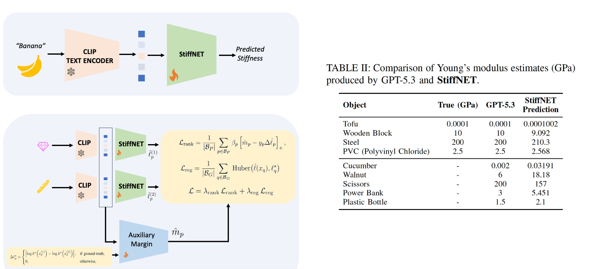
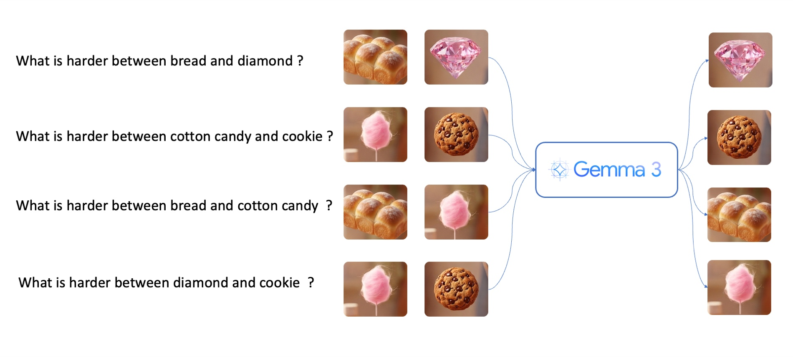
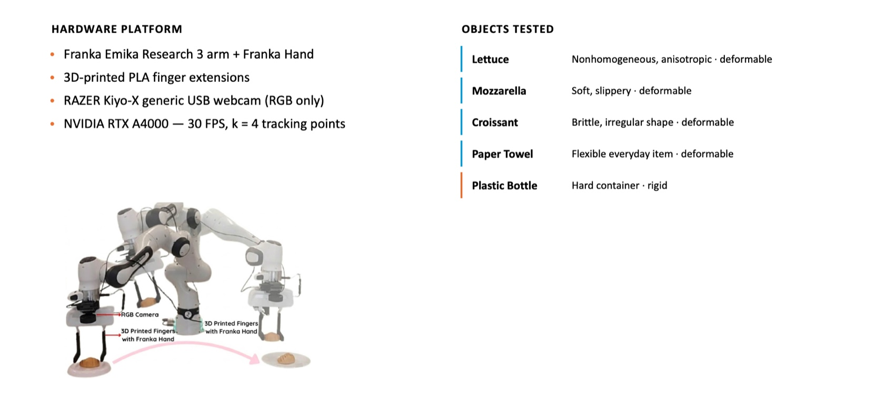
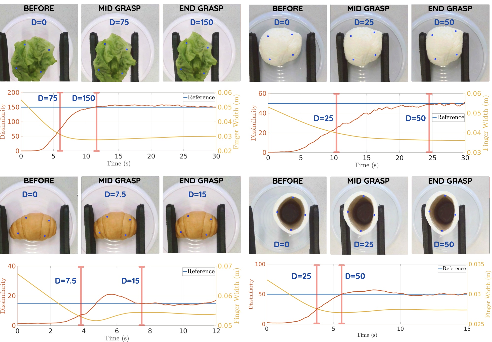
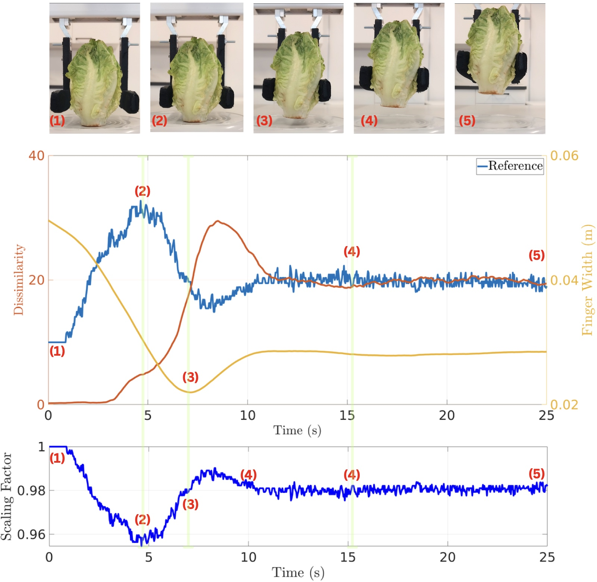
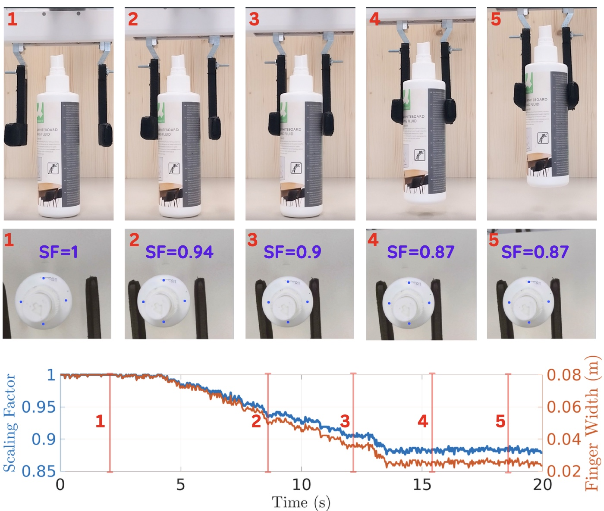

2026 IEEE/ASME International Conference on Advanced Intelligent Mechatronics (AIM) · Genova, Italy · July 7-10, 2026
One RGB camera. One standard gripper. A single control pipeline that handles both soft and rigid objects, with no tactile sensors and no specialized hardware.
Humans grasp anything, a soft tomato or a rigid bottle, with the same hand and a glance. We give a standard gripper that ability, using vision alone.
Grasping in unstructured environments requires handling objects with widely different mechanical properties, from soft and deformable items to rigid everyday objects. Most existing approaches address these categories separately and often rely on tactile sensing, object-specific models, or specialized grippers. We present a unified monocular vision-based grasping framework that targets both soft and rigid objects within a single control pipeline, using only RGB input and a position-controlled gripper.
The system combines open-vocabulary object detection, image segmentation, boundary-aware point assignment, real-time point tracking, and monocular depth estimation to recover object motion and geometry from vision. A key component is a language-based stiffness estimation model (StiffNET) that infers an object's expected compliance from its semantic description, providing an object-level prior for selecting the grasping strategy before contact. For deformable objects, adaptation is governed by a Procrustes-based dissimilarity measure from tracked keypoints; for rigid objects, gripper width is regulated through the scaling of tracked point distances. We validate the method with real-world pick-and-place on a Franka Emika Research 3 across lettuce, fresh mozzarella cheese, croissants, paper towels, and hard plastic bottles.
Robots must handle objects spanning a vast stiffness range, yet no single system handles both. Prior approaches each trade away generality, whether through hardware, sensing, or model assumptions.

A single RGB pipeline drives two grasping modes. A language prior selects the strategy before contact; visual feedback adapts the gripper width during the grasp.

A text prompt and the camera feed drive detection and segmentation; boundary-aware points are tracked and lifted to 3D, then compared against the initial state to estimate deformation.

Before the gripper touches the object, StiffNET turns a text description into a physical stiffness estimate, deciding how to grasp from semantics alone.


Full walkthrough of the method and real-world grasping experiments across soft and rigid objects.




Young's modulus estimates (GPa). StiffNET recovers physically meaningful stiffness from language alone, used here only to select the control mode.
| Object | True (GPa) | GPT-5.3 | StiffNET |
|---|---|---|---|
| Anchored (ground truth available) | |||
| Tofu | 0.0001 | 0.0001 | 0.0001002 |
| Wooden Block | 10 | 10 | 9.092 |
| Steel | 200 | 200 | 210.3 |
| PVC (Polyvinyl Chloride) | 2.5 | 2.5 | 2.568 |
| Generalization (no ground truth) | |||
| Cucumber | n/a | 0.002 | 0.03191 |
| Walnut | n/a | 6 | 18.18 |
| Scissors | n/a | 200 | 157 |
| Power Bank | n/a | 3 | 5.451 |
| Plastic Bottle | n/a | 1.5 | 2.1 |
@inproceedings{jadav2026monocular,
title = {Monocular Vision Based Control Framework for Grasping},
author = {Jadav, Shail and Lee, Dongheui},
booktitle = {2026 IEEE/ASME International Conference on Advanced
Intelligent Mechatronics (AIM)},
address = {Genova, Italy},
year = {2026}
}